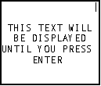
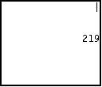
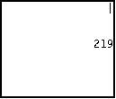
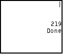
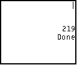

In this tutorial, we will learn how to use the Pause command. In the previous Tutorial, when we used For loops to delay action, the user didn't have to do anything. However, with Pause, whatever's on the screen stays there until the user presses
| HOME >> Tutorials >> Tutorial 8: Pausing |
Introduction:
In this tutorial, we will learn how to use the Pause command. In the previous Tutorial, when we used For loops to delay action, the user didn't have to do anything. However, with Pause, whatever's on the screen stays there until the user presses  .
.
New Command:
| Pause | Suspends program execution until user presses |
Pause value
Pause
The Code:
There's only going to be one set of code this time and I will show both uses of Pause in the one program.
| : | For AShell, SOS, and TI-Explorer |
| ClrHome | Clears the home screen |
| Lbl A | |
| Output(3,2,"THIS TEXT WILL") | Displays "THIS TEXT WILL" on line 3 |
| Output(4,3,"BE DISPLAYED") | Displays "BE DISPLAYED" on line 4 |
| Output(5,1,"UNTIL YOU PRESS") | Displays "UNTIL YOU PRESS" on line 5 |
| Output(6,6,"ENTER") | Displays "ENTER" on line 6 |
| Pause | Suspends program and waits for user to press |
| 219 |
Stores 219 into M |
| ClrHome | Clears the home screen |
| Disp "","","" | Displays three blank lines |
| Pause M | Displays M and then suspends program |
 press   press
 press  

Conclusion:
Well this tutorial was short and simple. I really could have just added Pause to another tutorial and just given you the definition and an example. You probably would have understood it just as much. Except for our first tutorial on ClrHome, this has been our shortest one. Next, we are going to learn how to use menus in our programming.
If you do not understand a particular part in this lesson, have suggestions, or find any problems please contact me.
 |
 |
| Tutorial 7 | Tutorial 9 |